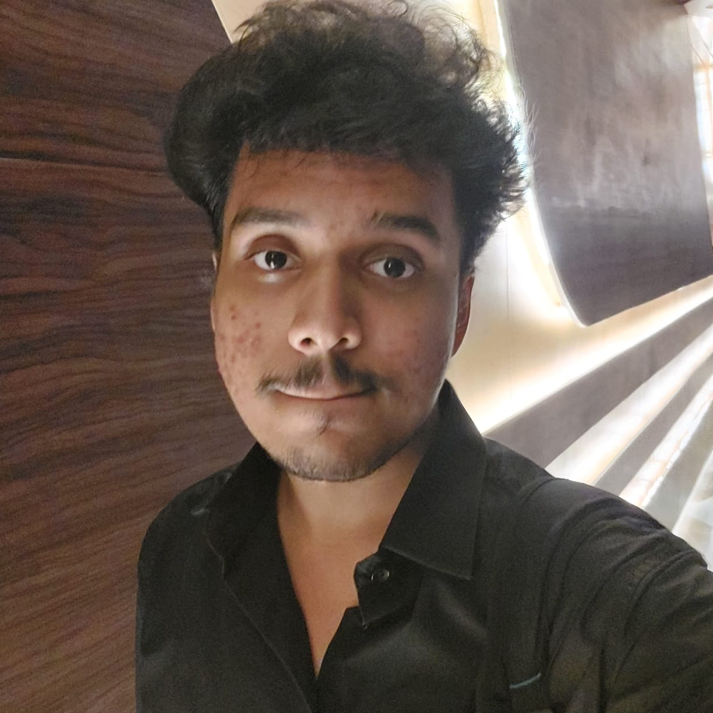

About Me
Hello! I’m Mohammad Modassir Hussain, a first-year Computer Science student at Delhi Technological University (DTU). I have a strong passion for technology and learning to create useful digital experiences. Currently, I’m focusing on web development and programming fundamentals as I build my skills.
I completed my schooling at the International Indian School in Dammam, Saudi Arabia, and joined DTU in 2025 for my B.Tech degree. My interests include web development, game development, and problem-solving, and I enjoy combining creativity with technical skills as I learn. Academically, I performed well in my CBSE board exams, scoring over 90% in both 10th and 12th grades.
Outside of coding, I enjoy playing badminton and video games, and I love watching movies and anime. These hobbies help me relax and spark my creativity outside of my studies.
Key Skills
- Programming Languages: Python, C
- Web Development: HTML, CSS
- Databases: SQL (basic DBMS concepts)
- Problem-Solving: Strong analytical and algorithmic thinking
- Soft Skills: Good teamwork, communication, and willingness to learn
Activities
- Coding Workshop Volunteer (2023): Taught basic programming concepts to school students at a local workshop.
- Science Fair Participant (2023): Presented a simple web development project at my school’s annual science fair.